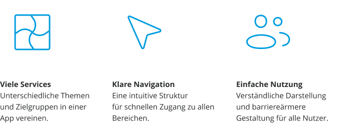
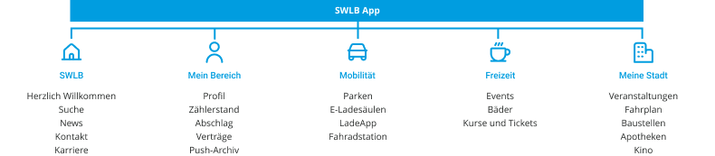

01 DAS PROJEKT
Eine App für Energie, Mobilität und Stadtleben
Die SWLB App bündelt digitale Services in einer zentralen Anwendung, gegliedert in fünf übersichtliche Bereiche.

02 Die Herausforderung
Viele Services – übersichtlich verbunden.
Wie lassen sich unterschiedliche Services und Informationen in einer App so organisieren, dass Nutzer schnell und intuitiv die gewünschten Inhalte finden?

03 Informationsarchitektur
Klare Struktur für eine einfache Orientierung
Die App ist in fünf Bereiche gegliedert. Die Inhalte wurden nach Nutzungszahlen priorisiert, damit häufig genutzte Funktionen schnell erreichbar sind.

04 UI Design
Moderne und übersichtliche Benutzeroberfläche
Vor der Gestaltung der App habe ich die bestehende SWLB-Website analysiert, um ihre visuelle Gestaltung und wiederkehrenden Gestaltungselemente zu verstehen. Darauf aufbauend habe ich die App-Komponenten an der vorhandenen Designsprache orientiert. Ziel war es, ein konsistentes Nutzungserlebnis über Website und App hinweg zu schaffen und den Nutzerinnen und Nutzern die Orientierung durch vertraute Gestaltungselemente zu erleichtern. Bei der Gestaltung habe ich insbesondere auf eine klare visuelle Hierarchie, eine einheitliche Komponentenstruktur und eine konsistente Darstellung der verschiedenen Servicebereiche geachtet.


05 Design System
Ein konsistentes Design System
Farben, Icons und UI-Komponenten wurden einheitlich gestaltet und eingesetzt. Dadurch entsteht eine konsistente visuelle Sprache über die verschiedenen Bereiche der App hinweg.


06 Accessibility
Barrierefreiheit & Kontrast
Die Herausforderung: Die Kombination aus Blau und Weiß bot in bestimmten UI-Anwendungen nicht ausreichend Kontrast.
Meine Lösung: Ich entwickelte zwei alternative Varianten: Blau mit Schwarz sowie ein dunkleres Blau mit Weiß.
Die Entscheidung: Der Kunde entschied sich für die Variante innerhalb des bestehenden Corporate Designs.
Mein Learning: Barrierefreiheit und etablierte Markenrichtlinien müssen in der Praxis häufig miteinander abgewogen werden.


07 Meine Rolle
Ich entwickelte das UX/UI-Design der App – von der Informationsarchitektur und Navigation bis zur Gestaltung der Benutzeroberfläche und der UI-Komponenten. Dabei berücksichtigte ich die Anforderungen mobiler Anwendungen für iOS und Android und entwickelte ein konsistentes Designsystem für die verschiedenen Funktionsbereiche.
08 Abschluss
Eine App. Viele Services.
Eine klare Nutzerführung.
UX/UI · App Design · Design System · Accessibility